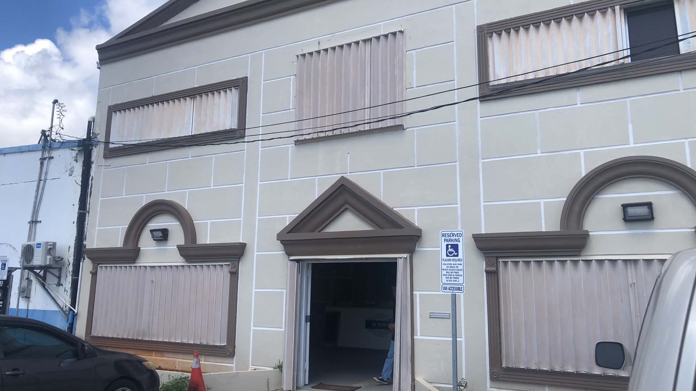

01
Quality Products
We focus on commercial-grade equipment and accessories designed for busy kitchens, consistent output, and long-term use.
About Co Pacific Distributors
Co Pacific Distributors helps Guam foodservice operators source commercial kitchen equipment, parts, and service support for dependable daily operations.
Who We Are
Co Pacific Distributors is a Guam-based commercial kitchen equipment and service provider focused on helping restaurants, quick-service kitchens, hotels, cafeterias, and foodservice operators keep their kitchens moving.
We support operators with quality equipment sourcing, parts assistance, preventive maintenance, and responsive service guidance. Whether a kitchen needs new equipment, replacement parts, or help identifying the right solution, our goal is to make the process clear and reliable.

Local Advantage
From daily restaurant operations to high-volume rush periods, local foodservice businesses need support that is practical, responsive, and easy to reach.
We help you identify equipment options based on your kitchen type, menu, volume, and operational needs.
Send us the brand, model number, serial number, part number, and photos so we can help check availability.
We assist with maintenance needs, service requests, and support for keeping commercial equipment operating reliably.
How We Help
Request equipment, parts, or service support through the contact form or by phone.
For parts and service, provide the brand, model number, serial number, and photos when available.
We help review the request and provide quote, parts, or service guidance based on your needs.
Let’s Keep Your Kitchen Moving
Contact Co Pacific Distributors and tell us what your kitchen needs. We’ll help you find the right next step.